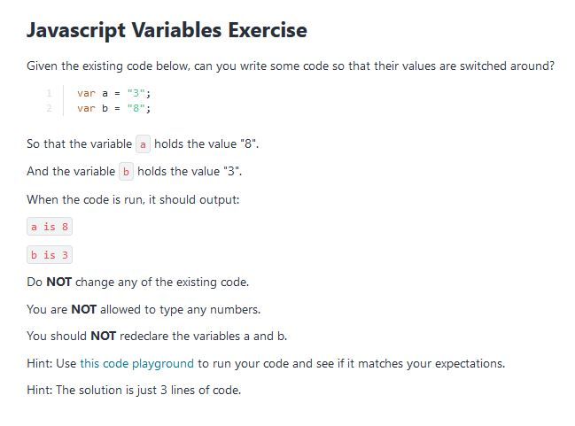
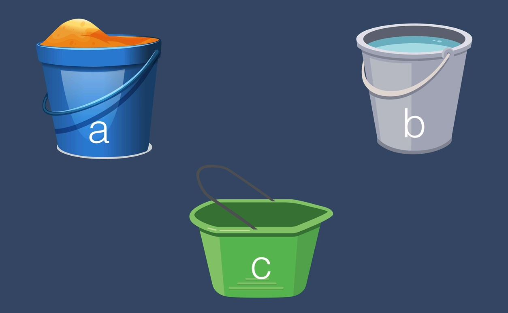
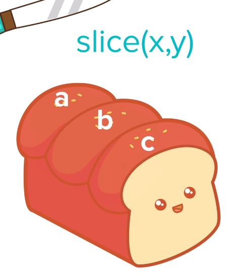
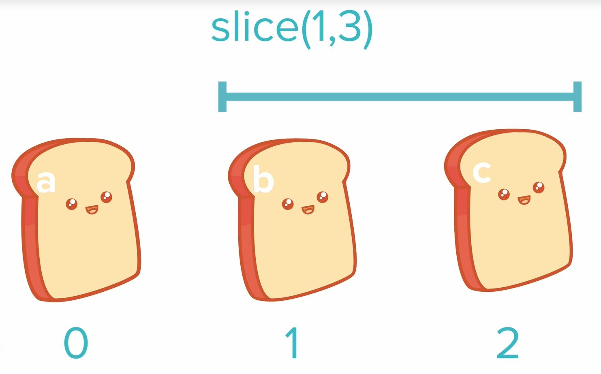

Section 9: Introduction to Javascript ES6
Writing js in the console, hold down shift for multi line.
CTRL + K will clear the console but keep the data
clear() will clear the console and data
alert()
The Window.alert() method displays an alert dialog with the optional specified content and an OK button. Dialog boxes are modal windows - they prevent the user from accessing the rest of the program's interface until the dialog box is closed. For this reason, you should not overuse any function that creates a dialog box (or modal window)
The craziest beginner exercise I've ever seen
 I had to go over this a couple of times and we used buckets to visualize the solution. Using a new variable c and settings it's value to a, free'd up a to equal b which was then free'd up to equal the value held in c. Don't ask me why but it took me a while to get my head around it. See the code here
Coding isn't the hard part, the hard bit is the logic.
L109 Ex2
This was a tough one featuring concatenation and string.length. We had to write a simple program that prompts
user to enter a message (max 140 characters). Return a string like this:
You have written 6 characters, you have 134 characters left.
See the code here
L110. Slicing and Extracting Parts of a String
str.slice(x,y)
specify the slice you'd like out of the string
The index to the end of the specified portion of stringObj. The substring includes the characters up to, but not including, the character indicated by end. If this value is not specified, the substring continues to the end of stringObj. Returns a section of a string.
str.toUpperCase()
The toUpperCase() method returns the calling string value converted to uppercase (the value will be converted to a string if it isn't one).